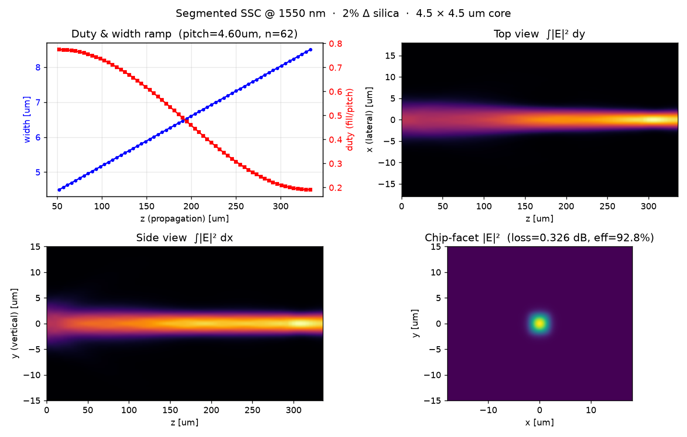
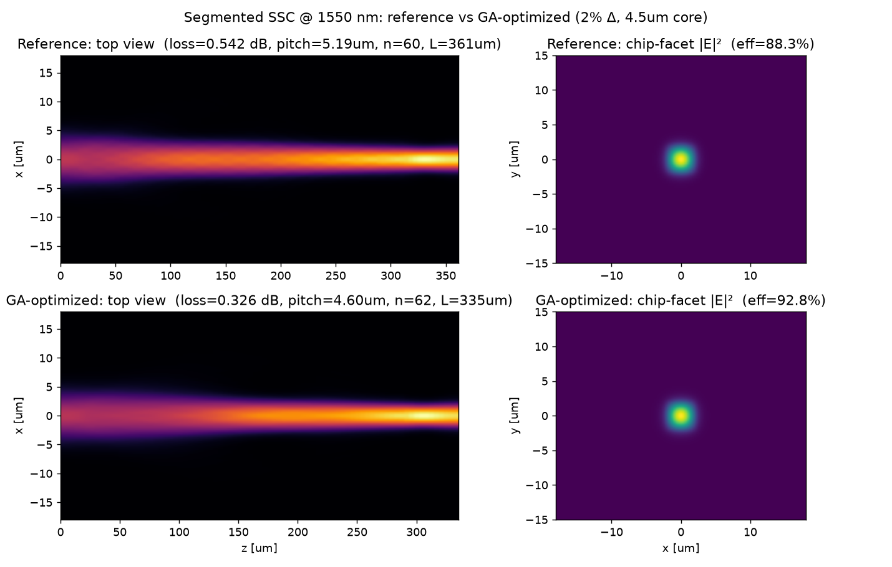

2% Δ silica channel waveguide (4.5×4.5 µm) ↔ SMF-28 at 1550 nm — segment width/duty optimized with a genetic algorithm driving a 3D BPM loss evaluation.
SMF-28 MFD is ≈ 10.4 µm at 1550 nm (vs ≈ 9.2 µm at 1310 nm). The last field is the mode-field diameter the SSC tip presents to the SMF (a design target the GA searches for). Set it equal to the bare WG MFD to see the loss without a converter.
Gaussian–Gaussian overlap model for a quick estimate; the real design objective is the 3D-BPM output power below.
Mode field cross-section — blue: SMF Gaussian, red dashed: bare WG mode, green: expanded SSC-tip mode. Larger overlap with the SMF means lower loss.
The segment list is generated from a small parameter vector; the GA treats that vector as the gene.
| Variable | Meaning | Search range (example) |
|---|---|---|
pitch | Segment period (fixed along the device) | 3.0 – 8.0 µm |
n_seg | Number of dashed segments | 35 – 100 |
duty_start / duty_end | Duty (fill / pitch) at the chip / SMF end | 0.75–0.98 → 0.10–0.40 |
w_start / w_end | Segment width at chip (solid) / SMF facet | 4.5 µm → 8.5 µm (fixed) |
duty_profile | Duty ramp shape | linear / quad / cos |
width_profile | Width ramp shape | linear / quad / cos |
Duty violating the mask minimum linewidth / gap (e.g. 0.5 µm) is clipped or penalized in the fitness function.
n(x,y;z).Loss = −10·log10(η) [dB]; the GA minimizes loss. Robustness is checked over polarization and wavelength (1530 / 1550 / 1570 nm).% Fitness (pseudocode)
function loss = eval_ssc(gene)
idx = build_index_field(gene); % (1) gene -> n(x,y;z)
psi = bpm3d_propagate(idx, smf_mode); % (2) launch SMF Gaussian, propagate
eta = overlap(psi_out, chip_mode); % mode overlap at chip facet
loss = -10*log10(eta); % (3) dB, smaller is better
loss = loss + penalty(gene); % min-linewidth / gap penalty
end
% GA driver: tournament select + real-coded crossover + Gaussian mutation.
% BPM is expensive -> search on a coarse grid, re-validate the winner on a fine grid.
A pure-Python pipeline (gdstk segment generation → self-written split-step 3D BPM → genetic algorithm) was run for the target spec: chip waveguide 4.5 µm × 4.5 µm solid on the left, 8.5 µm-wide low-duty SMF facet on the right, thickness fixed at 4.5 µm, at 1550 nm on the 2% Δ silica platform. The GA freely tuned the pitch, number of segments, and the duty / width ramps. A 6-seed / two-facet-width sweep confirmed the design below as the lowest-loss condition.
| Quantity | Optimized value |
|---|---|
| Coupling loss @ 1550 nm (fine grid, dx = 0.15 µm) | 0.326 dB (η = 92.8 %) |
| Pitch / number of segments | 4.60 µm / 62 |
| Duty ramp (chip → SMF end) | 0.77 → 0.19 (cosine profile) |
| Width ramp (chip → SMF end) | 4.5 → 8.5 µm (linear) |
| Total device length | 335 µm |
| Residual (non-radiated) power | 0.969 |
| Reference segmented SSC (un-optimized) | 0.542 dB (η = 88.3 %) |
The narrow solid end is a well-guided chip mode; toward the wide low-duty end the sub-wavelength segments lower the effective index so the mode expands to match the SMF-28 mode field (≈ 10.4 µm at 1550 nm). Launch is done at the SMF facet and overlapped with the chip mode at the opposite facet (reciprocity ⇒ same as chip→SMF). The GA cut the coupling loss from 0.542 dB (reference) to 0.326 dB, a 0.22 dB improvement.


Everything needed to reproduce the result above:
Run with python3 run_seg_ga_1550.py --pop 18 --gen 14 --seed 0 --out . (needs numpy, gdstk, matplotlib, and bpm3d.py). The GA searches on a coarse grid; the final candidate is always re-validated on the fine grid (dx ≤ 0.15 µm, window ≥ ±18 µm).
coupling_loss.py mfd_coupling.py Coupling loss tool → MFD & coupling loss tool →
{kind=link}
{kind=link}